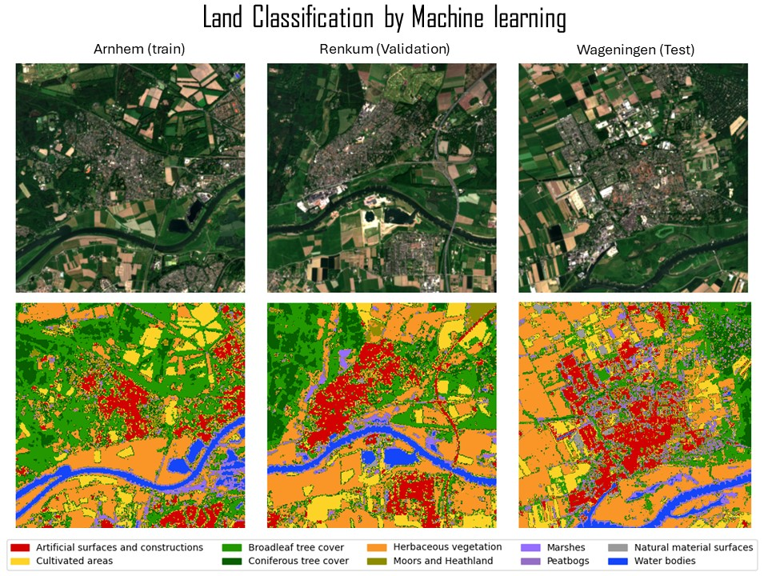

Develop Nature-based Solutions
with GIS and AI
At the Forest Agency of Japan, I was responsible for the comprehensive management of national forests, particularly in the Shikoku region. My role included budget management, law compliance check, active forest management and planning, and data collection for National Forest Inventory. I led efforts to standardize drone usage regulations across regional forest management bureaus and unified operational protocols for national forest access. I also contributed to international environmental policy work related to the United Nations Framework Convention on Climate Change (UNFCCC) and Food and Agriculture Organization (FAO). In the climate policy domain, I was engaged in advancing REDD+ under the Paris Agreement and played a key role in Joint Crediting Mechanism (JCM) initiatives, including the design of afforestation guidelines for JCM, which leverage carbon credits, and participation in negotiations related to Article 6 of the Paris Agreement. I am a certified reviewer for Biennial Transparency Reports (BTR) under the UNFCCC and serving as a technical reviewer for REDD+ Forest Reference Emission Level (FREL) submissions in 2025. On the operational side, I managed and trained forest maintenance field staff, supported local teams and interns in Seattle, and supervised new employees at the agency. To further integrate AI, data science and geospatial expertise into forest monitoring, I have completed the Geo-Information Science MSc program at Wageningen University. My study focuses on evaluating tree species classification and canopy height model algorithms using satellite image time series and deep learning as well as exploring agroforestry crop classification and historical land-use change detection. I am working as a remote sensing specialist in FAO and focusing on Forest Resource Assessment Remote Sensing Survey, which is collecting samples by photointerpretation with help from AI model predictions.
Experience
Oct 2025 – Present
Food and Agriculture Organization of the UN — Rome, Italy
Remote Sensing Specialist, Forestry Division
Land-use label collection via satellite photointerpretation for the FAO Forest Resource Assessment (FRA) Remote Sensing Survey.
Constructing and evaluating AI models for automated land-use and land-use change classification.
Concurrently supporting a voluntary AI/geospatial data analysis team within Japan's Ministry of Agriculture, Forestry and Fisheries.
Sep 2023 – Aug 2025
Wageningen University & Research — Netherlands
MSc Geo-information Science
Deep learning for tree species classification (Dutch National Forest Inventory), canopy height modeling, agroforestry crop identification, and historical land-use change detection.
Apr 2021 – Aug 2023
Forest Agency, Japan — Tokyo
Assistant Director, International Forestry Cooperation Office
Japanese REDD+ focal point at COP26, COP27 & SB58. Managed JCM afforestation projects in Cambodia. Represented Japan at the World Bank Forest Carbon Partnership Facility.
Apr 2018 – Mar 2021
Consulate General of Japan — Seattle, USA
Consul
Promoted Japan–US AI and technology partnerships. Supported ML-focused meet-up events connecting Seattle-area startups with Japanese investors.
Apr 2015 – Mar 2018
Forest Agency, Japan — Tokyo
Chief, National Forest Management Division
Led budgetary and legal coordination for national forest management. Established Japan-wide drone usage regulations and standardized procedures across regional offices.
Apr 2009 – Mar 2015
Forest Agency / Ministry of Internal Affairs — Japan
Forestry Officer & Local Finance Chief
Managed 2,000 ha of national forest in Shikoku. Developed forest policy documents and coordinated local government finance for wildlife and marine debris legislation.
Portfolio

Publications
Article in press · Science of Remote Sensing · 2026
Ishikawa, T., Bonannella, C., Lerink, B. J. W., & Rußwurm, M. (2026). Assessing the Effectiveness of Deep Embeddings for Tree Species Classification in the Dutch Forest Inventory. DOI: 10.1016/j.srs.2026.100498
Digital Publication · FAO · 2026
FAO (2026). Transparency in practice: Country experiences using Open Foris for climate reporting. StoryMap
Conference Presentation · ESA Living Planet Symposium 2025
Ishikawa, T. (2025, June 26). Evaluating the Impact of Deep Pre-trained Models for Tree Species Classification on Forest Inventory. Oral presentation, Vienna, Austria. Slides (PDF)
UNFCCC Technical Review · 2025
Expert reviewer for the technical assessment of REDD+ forest reference emission levels from Costa Rica under the UNFCCC Enhanced Transparency Framework.